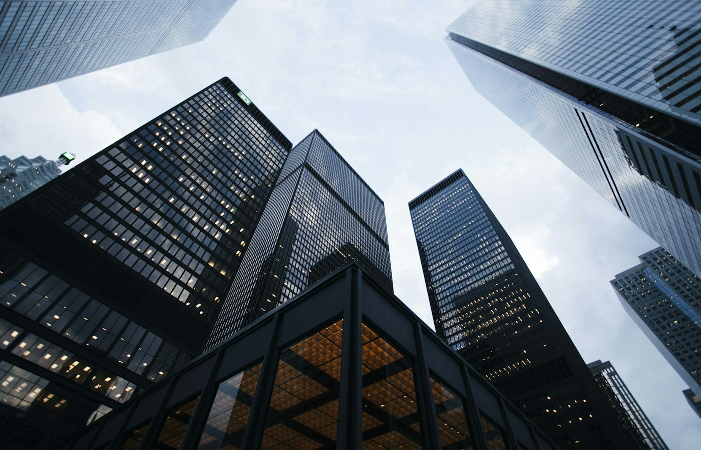
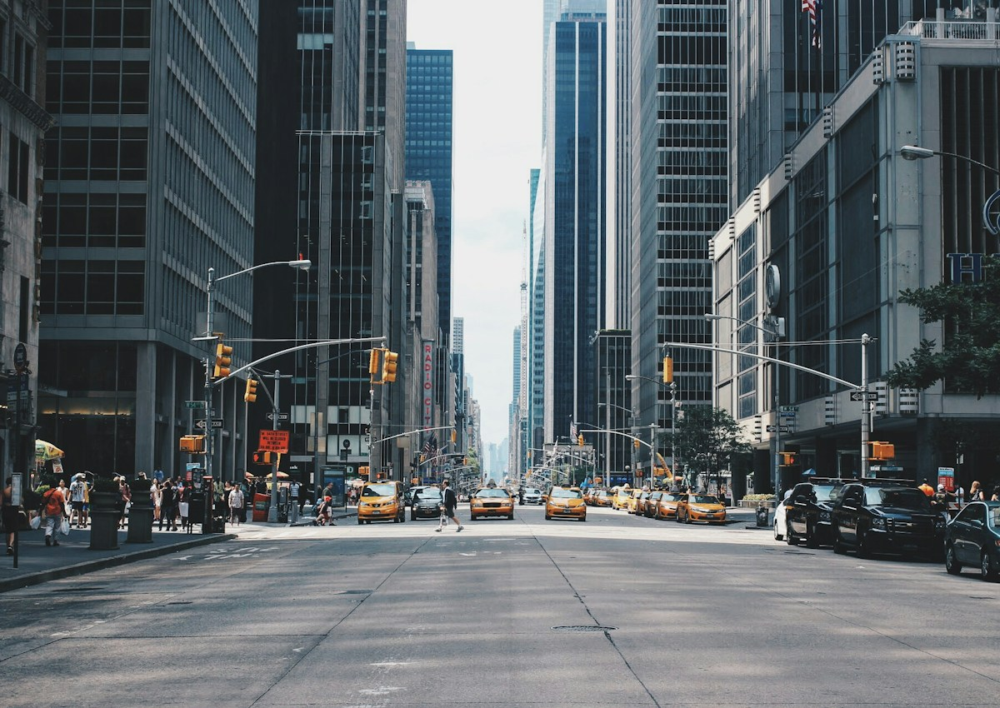
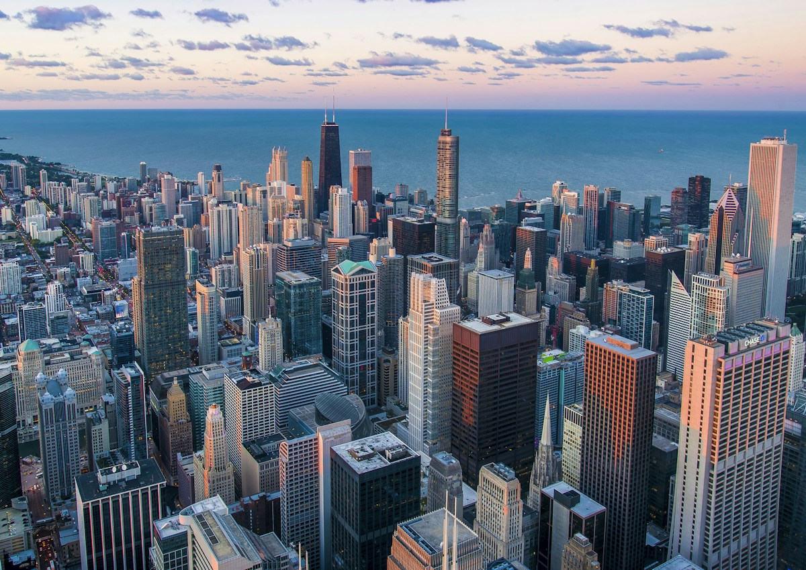

Городской проект нужно показывать не как объект, а как сценарий жизни
Stepyanka City — это не только здания, улицы и инфраструктура. Это будущий ритм района: как люди перемещаются, где отдыхают, как работают сервисы, как ощущается среда и почему место становится ценным.
Stepyanka City
Городская презентация для urban-проекта: район, инфраструктура, архитектурная логика, lifestyle-сценарии и визуальная подача будущей среды.


Городская перспектива показывает масштаб района и связь проекта с реальным окружением.
Абстрактные архитектурные кадры помогают показать masterplan, структуру и визуальную идею проекта.
Пользователь должен представить себя в районе
Для urban-проекта мало показать рендеры. Нужно объяснить, как будет работать место: где входы, где зелёный маршрут, как добраться, где проводить время, что меняется в повседневности.
Зелёные и lifestyle-кадры помогают показать район как место жизни, а не только объект строительства.

Маршрутный слой показывает доступность, направление движения и связь проекта с городом.
Структура помогает объяснить масштаб
Презентация делится на понятные блоки: контекст города, потенциал района, концепция, инфраструктура, архитектура, сценарии жизни и причины, почему проект может стать новой точкой притяжения.
Ценность района складывается из деталей
Хорошая urban-презентация показывает не только “что будет построено”, но и “как это будет ощущаться”: утренний маршрут, двор, локальные сервисы, вид из окна, вечерняя прогулка, связь с центром и ощущение безопасности.
Что вошло в презентацию
Структура city-deck, visual story, блоки инфраструктуры, urban-сценарии, архитектурная подача, карта смыслов и финальный блок ценности проекта.
Городской проект становится понятной историей
Итог — презентация, которая помогает показать район как цельную среду, а не набор разрозненных объектов.